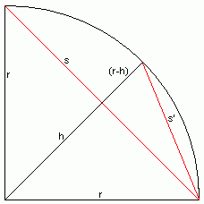

Die Quadratur des Kreises habe auch ich nicht gefunden. Aber immerhin habe ich Pi mit Dreiecken berechnen können.
Die Kreiszahl π (Pi) wird verwendet, um Umfang (u) und Fläche (f) von Kreisen und Kreissegmenten zu ermitteln. In Abhängigkeit vom Radius (r) gilt:
Schwierig ist einzig die Ermittlung dieser besonderen Zahl.
Mein Ansatz beruht auf folgender Überlegung: Wenn man einen Kreis in gleichseitige Dreiecke zerlegt, deren gleiche Seiten jeweils die Kreisradien und deren ungleiche Seite eine Sekante ist, erhält man eine berechenbare Näherung des Kreises. Je mehr dieser Dreiecke man verwendet, desto genauer wird die Näherung.
Verwendet man zum Einstieg einen Viertelkreis mit der Sekante s und zerlegt dieses Dreieck in zwei gleich große Dreiecke mit der Sekante s', erhält man eine Iterationsvorschrift, die fortgeführt werden kann.
Wie aus der Skizze ersichtlich ist, ergibt sich s' aus der Hypothenuse des rechtwinkligen Dreiecks aus (s/2) und (r-h). Nach Pythagoras gilt also:
| s'² = (s/2)² + (r-h)² |
Die Höhe (h) eines gleichseitigen Dreiecks steht in Relation zur Basis (hier: s) und den gleichen Schenkeln (hier: r) in einem ähnlichen Verhä:ltnis:
| r² = h² + (s/2)² | | - (s/2)² |
| h² = r² - (s/2)² | | √ |
| h = √r² - (s/2)² | | √ |
Eingesetzt ergibt dies:
| s'² = (s/2)² + (r - √r² - (s/2)² )² | | Ausmultiplizieren |
| s'² = (s/2)² + r² - 2r√r² - (s/2)² + r² - (s/2)² | | Auflösen |
| s'² = 2r² - 2r√r² - (s/2)² | | Auflösen |
Bei einem Normradius r=1 ergeben sich Umfang (u=2π) und Fläche (f=π) sehr einfach. Auch die Ermittlung von s' vereinfacht sich hierdurch:
| s'² = 2*1² - 2*1*√1² - (s/2)² | | Auflösen |
| s'² = 2 - 2√1 - (s/2)² | | Umformen |
| s'² = 2 - √4*(1 - (s/2)²) | | Umformen |
| s'² = 2 - √4 - 4*s²/4 | | Umformen |
| s'² = 2 - √4 - s² |
Die erste Näherung des Umfangs (u0) ergibt sich aus dem vierfachen der ersten Sekante (s0). Mit jedem Verkleinerungsschritt verdoppelt sich die Anzahl der vorhandenen Dreiecke. s1 muß also bereits achtfach genommen werden und so weiter:
| ui = si * 4 * 2i |
Da der Umfang des Kreises u = 2π ist, gilt:
| ui→∞ → 2π |
Wir können also ein p = u/2 definieren, für das gilt:
| pi→∞ → π |
Außerdem gilt hierbei:
| 2pi = si * 4 * 2i | | /2 |
| pi = si * 2 * 2i | | Auflösen |
| pi = si * 2(i+1) |
Der Startpunkt der Iteration ist die Sekante s0 durch den gesamten Viertelkreis. Nach Pythagoras gilt hier:
| s0² = r² + r² | | r=1 |
| s0² = 2 | | √ |
| s0 = √2 |
Für die Iteration gilt wie oben gezeigt:
| si+1² = 2 - √4 - si² |
Durch Austausch der Zählvariable i mit j = i+1 und eine Verlegung des Startpunkts von (nach der Umrechnung) 1 auf 0 ergibt sich folgender Algorithmus:
| Anfangsbedingung: | s1 = √2 | | Einsetzen in die Iteration |
| s1² = 2 - √4 - s0² | | Einsetzen und Auflösen | |
| 2 = 2 - √4 - s0² | | *(-1) +2 | |
| 0 = √4 - s0² | | ² + s0² | |
| s0² = 4 | | √ | |
| s0 = 2 | | √ | |
| Iteration: | sj+1² = 2 - √4 - sj² | |
| Zielfunktion: | pj = sj * 2j | |
| Ergebnis: | pj→∞ → π |
Nach Einsetzen einer anderen Iterationsvariable ni = 2 - si² (d.h. si = √2 - ni) ergibt sich folgender einfacherer Algorithmus:
| Anfangsbedingung: | √2 - n0 = 2 | | ² |
| 2 - n0 = 4 | | *(-1) +2 | |
| n0 = -2 | ||
| Iteration: | √2 - nj+1² = 2 - √(4 - √2 - nj²) | | Auflösen |
| 2 - nj+1 = 2 - √4 - (2 - nj) | | Auflösen | *(-1) +2 | |
| nj+1 = √2 + nj | ||
| Zielfunktion: | pj = √2 - nj * 2j | |
| Ergebnis: | pj→∞ → π |
Endfassung des Algorithmus:
| ||||||||||
|---|---|---|---|---|---|---|---|---|---|---|
| j | nj | pj | ||||||||
| ∞ | 2 |
| ||||||||
Quellcode:
<table border="border">
<tr><th>j</th><th>n<sub>j</sub></th><th>p<sub>j</sub></th></tr>
<script language="JavaScript">
var j;
var n;
var p;
var pold;
j=0; n=-2; p=2; pold=0;
while (p>pold) {
document.write("<tr><td>" + j + "</td><td>" + n);
document.writeln("</td><td>" + p + "</td></tr>");
pold=p;
n = Math.sqrt(2+n);
j = j + 1;
p = Math.sqrt(2-n) * Math.pow(2,j);
}
</script>
</table>